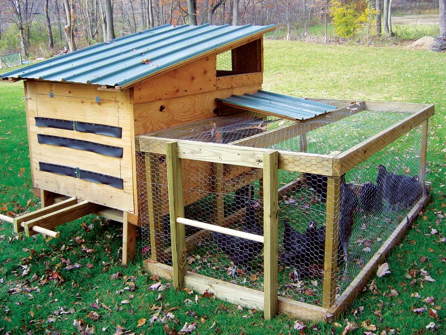
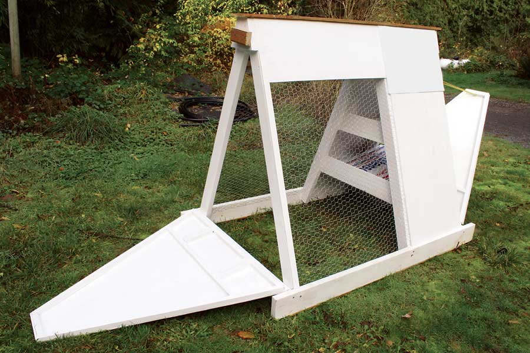

After reading many of your chicken and egg articles, my 13-year-old daughter designed this mobile chicken tractor (see Image Gallery) and my husband built it.
Our 11-year-old daughter is a vegetarian, and she has motivated us to begin our chicken venture with the goals of healthier eating and living. Our daughters are responsible for taking care of the black Australorp hens.
The main house is constructed mostly from recycled materials, including a large wooden shipping crate and a piece of metal roofing we found on the side of the road. There are doors for gathering eggs and a door to the “run.” One whole side opens for cleaning. I think it is a very ingenious design!
The tractor and run are moved around our yard with the hope that the hens will eat the grubs, ticks, beetles, etc.
I invested 20 hours and $60 in materials to build this chicken “tractor” (see Image Gallery), which comfortably houses four hens.
This A-frame chicken coop is 4 feet wide, 6 feet long and 41⁄2 feet tall. The base is made from 2-by-6s, with 2-by-4s for the sides. The door skins, siding and nesting boxes are three-eighths-inch plywood. Four 4-inch strap hinges hang the doors, and chicken wire finishes the project. For strength, I used wood screws rather than nails to build the coop.
|
 MARA ZIEGLER A coop such as this can be made from scrap lumber, a few found materials and some chicken wire. |
 DAVID HYMEL Mobile coops are a great way to keep a few chickens in a small space, while still allowing them to graze. |
|